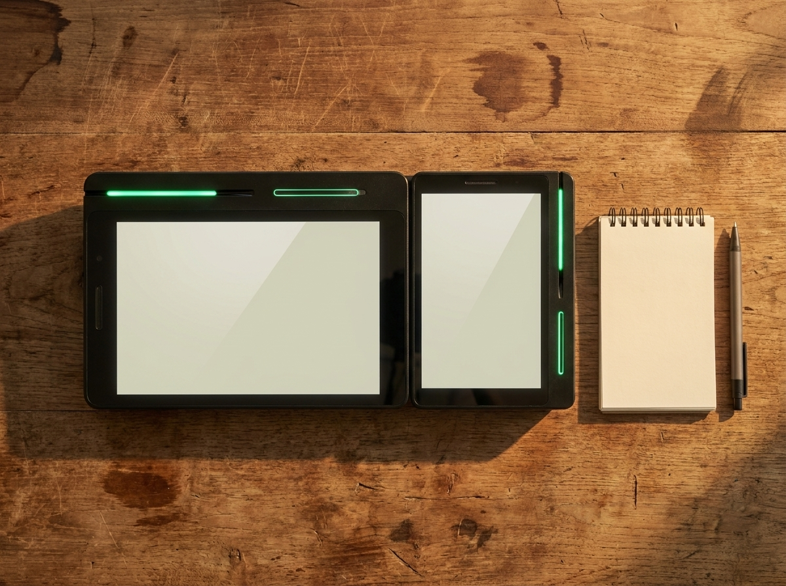

사업용 신용카드, 홈택스에 등록해야 할까요? — 등록하면 편해지는 것과 정리 습관
결론부터 말씀드리면, 사업에 쓰는 카드는 국세청 홈택스에 등록해 두는 쪽이 관리하기 훨씬 편합니다. 등록해 두면 그 카드로 결제한 내역이 국세청에 자료로 모이기 때문에, 신고철마다 영수증을 한 장씩 뒤지는 수고가 크게 줄어듭니다. 다만 등록이 의무인지, 어디까지 경비로 인정되는지는 사업자 유형과 업종, 거래 성격에 따라 달라집니다. 이 글에서는 "등록하면 무엇이 편해지고, 평소에 무엇을 정리해두면 좋은지"까지만 정리했습니다. 등록 대상 여부나 공제 범위 같은 판단은 국세청 홈택스에서 최신 기준을 확인하시거나 세무대리인과 상담하시길 권합니다.
등록하면 뭐가 편해지나 — 경비 자료가 알아서 모입니다
사업용 신용카드를 홈택스에 등록해 두면 가장 크게 달라지는 것은 자료 수집의 방향입니다. 등록 전에는 사장님이 영수증을 모아 하나씩 챙겨야 했다면, 등록 후에는 카드사에서 넘어온 사용 내역이 홈택스 쪽에 쌓입니다. 신고 시즌에 "이 지출이 뭐였더라" 하며 종이 뭉치를 뒤지는 시간이 줄어드는 셈입니다.
두 번째는 누락이 줄어든다는 점입니다. 재료비, 소모품, 포장 용기처럼 소액으로 자주 나가는 지출은 영수증이 사라지기 쉽습니다. 카드 한 장으로 몰아서 결제하면 그 내역이 통째로 남으니, 챙길 수 있었던 매입 자료를 그냥 흘려보내는 일이 줄어듭니다.
세 번째는 세무대리인과의 소통입니다. 기장을 맡기고 계신다면 자료가 한곳에 모여 있을수록 확인 요청이 줄고 마감도 빨라집니다. 신고 기간에 오가는 연락의 상당수가 "이 지출 증빙이 뭔가요"라는 확인이기 때문입니다.
다만 등록했다고 해서 그 카드로 쓴 결제가 모두 경비로 잡히는 것은 아닙니다. 사업 관련성이 있어야 하고, 항목에 따라 매입세액 공제 대상에서 빠지는 지출도 있습니다. 이 부분의 기준은 홈택스 안내와 세무대리인 확인입니다.
등록 대상과 방법, 큰 흐름만 잡아두기
절차 자체는 어렵지 않습니다. 큰 흐름은 이렇습니다. 사업 지출에 쓸 카드를 정하고, 홈택스에 사업자로 로그인한 뒤, 사업용 신용카드 등록 메뉴에서 해당 카드번호를 등록하는 순서입니다. 사업용 계좌 역시 홈택스에서 신고하는 절차가 따로 마련되어 있습니다.
여기서 헷갈리기 쉬운 부분이 "나도 해야 하나"입니다. 사업용 계좌는 일정 요건에 해당하는 사업자에게 신고 의무가 생기는 경우가 있고, 사업용 신용카드 등록은 성격이 조금 다릅니다. 본인이 어디에 해당하는지는 홈택스에서 사업자 정보를 조회해 확인하시는 편이 확실합니다.
평소에 정리해 두면 좋은 항목을 표로 묶었습니다.
| 구분 | 무엇을 정리하나 | 확인 포인트 |
|---|---|---|
| 사업용 신용카드 | 매장 지출에 쓰는 카드 | 명의와 등록 여부, 여러 장이면 함께 등록 |
| 사업용 계좌 | 사업 관련 입출금 통장 | 신고 의무 대상인지 홈택스에서 확인 |
| 매입 자료 | 세금계산서, 지출증빙 현금영수증 | 사업 관련성 구분과 보관 |
| 매출 자료 | 카드·간편결제·현금 매출 내역 | 결제수단별 집계가 서로 맞는지 |
| 사적 지출 | 가사·개인 소비분 | 사업용 카드와 섞이지 않게 분리 |
표의 항목을 다 갖췄더라도 어떤 지출이 공제 대상인지는 사안마다 다릅니다. 게다가 세법은 개정이 잦아서, 작년에 통했던 기준이 올해는 달라져 있는 경우도 흔합니다. 판단이 필요한 대목에서는 홈택스의 최신 안내를 보시거나 세무대리인에게 물어보시는 편이 안전합니다.

개인 카드와 섞어 쓸 때 생기는 일, 그리고 매출 자료
현장에서 가장 흔한 문제는 카드 한 장으로 장도 보고 주말 가족 외식도 하는 경우입니다. 이렇게 되면 내역이 뒤섞여서, 나중에 어떤 결제가 매장 지출이었는지 사장님 기억에 의존하게 됩니다. 반대로 개인 카드로 재료를 사고 그 카드를 등록해두지 않으면, 챙길 수 있었던 자료가 조용히 지나가기도 합니다. 매장용 카드를 따로 정해두는 것만으로 정리 시간이 눈에 띄게 줄어듭니다.
그런데 세금은 매입 자료만으로 정해지지 않습니다. 매출 자료가 함께 정확해야 신고가 매끄럽습니다. 매입은 카드 등록으로 어느 정도 자동으로 모이는데, 매출은 결제 단말기와 장부가 따로 놀면 결국 손으로 맞춰야 합니다.
그래서 매출이 결제 단계에서 바로 정리되는 환경이 도움이 됩니다. 소규모 매장에서 많이 쓰는 네이버단말기는 카드와 간편결제 매출 내역이 한 화면에 함께 쌓여서, 일자별·기간별로 바로 확인할 수 있습니다. 월 0원·약정 없음으로 시작할 수 있어 초기 부담도 크지 않습니다. 네이버 예약이나 주문을 함께 쓰는 매장이라면 손님 유입부터 결제, 정산 기록까지 한 흐름으로 남는다는 점이 특히 편합니다.
물론 단말기가 세금 신고를 대신해 주지는 않습니다. 도움이 되는 지점은 그 앞단, 즉 매출 증빙이 흩어지지 않게 모아두는 일입니다. 매입은 사업용 카드 등록으로, 매출은 결제 단말기로. 이 두 축만 잡아두면 신고철에 준비할 것이 훨씬 단순해집니다.
자주 묻는 질문(FAQ)
Q. 카드를 여러 장 쓰는데 전부 등록해야 하나요?
사업 지출에 쓰는 카드가 여러 장이라면 함께 등록해 두는 편이 자료 누락을 줄이는 데 도움이 됩니다. 등록 가능한 장수나 명의 조건 같은 세부 기준은 홈택스 안내에서 확인하시기 바랍니다.
Q. 등록만 하면 그 카드로 쓴 돈이 다 경비로 인정되나요?
그렇지 않습니다. 등록은 자료를 모아주는 장치이고, 경비 인정이나 매입세액 공제 여부는 사업 관련성과 지출 항목에 따라 달라집니다. 애매한 지출은 세무대리인과 상담하시는 편이 안전합니다.
Q. 개인 카드로 재료를 샀는데 어떻게 하나요?
증빙이 남아 있다면 우선 정리해 두시고, 처리 방법은 사업자 유형과 상황에 따라 다르므로 홈택스 기준 확인이나 세무대리인 상담을 권합니다. 앞으로는 매장 지출용 카드를 따로 정해 두시면 훨씬 수월해집니다.
Q. 매출 자료는 어디까지 준비해 두면 되나요?
카드·간편결제·현금 매출이 기간별로 조회되는 상태라면 준비가 된 셈입니다. 단말기에서 집계가 자동으로 잡히면 그 화면을 그대로 근거 자료로 쓸 수 있어 매달 마감이 가벼워집니다.
매출 정리는 결제 단계에서부터
사업용 카드 등록이 매입 자료를 모아준다면, 매출 자료를 모아주는 것은 결제 환경입니다. 네이버단말기 도입이나 기존 단말기 교체를 고민 중이시라면 편하게 문의 주세요. 정품 신제품을 수도권 직영으로 직접 방문해 설치·관리해 드리고, 매장 구성에 맞는 방식은 상담 시 안내해 드립니다. 주문·결제·정산 올인원으로 기록이 한곳에 남으면, 세무 판단은 홈택스와 세무대리인에게 맡기고 사장님은 장사에 더 집중하실 수 있습니다.
- 📞 전화상담 1544-7754
- 🌐 홈페이지 nwpos.co.kr
- 📷 인스타그램 instagram.com/nurinetworkspos
- ▶️ 유튜브 youtube.com/@nurinetworks